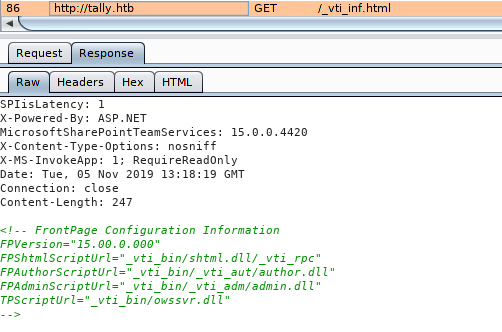

# Microsoft SharePoint
•
https://resources.bishopfox.com/files/tools/sharepointdiggity/SharePoint%20-%20URL%20Extensions%20-%2018MAR2012.pdf - All about SharePoint + endpoints + extra:
•
https://resources.bishopfox.com/resources/tools/sharepoint-hacking-diggity/attack-tools/#sharepoint-userdispenum - Attack tools
## Wordlists
/usr/share/wfuzz/wordlist/vulns/sharepoint.txt## Info
• SharePoint is tied closely with the hostname
◇ Write into /etc/hosts the hostname of the machine
▪ e.g.
10.10.10.52 machine1 ▪ not
10.10.10.52 machine1.com ◇ Some pages will only respond/list files correctly if using the hostname in the url
▪ example from
hackthebox Tally - This lists the site page -
http://tally/_layouts/15/start.aspx#/SitePages/Forms/AllPages.aspx - This doesn't
http://tally.htb/_layouts/15/start.aspx#/SitePages/Forms/AllPages.aspx## SharePoint Endpoints
•
/_layouts/viewlsts.aspx - list files on server
◇ used in
hackthebox Tally•
/_layouts/userdisp.aspx?ID=1 - might be able to enumerate users
• Lists of Endpoints
◇
https://resources.bishopfox.com/files/tools/sharepointdiggity/SharePoint%20-%20URL%20Extensions%20-%2018MAR2012.pdf - very good
◇
https://gist.github.com/lgrangeia/3696de8363e2cbe6869871878ae00e30 ◇
/usr/share/wfuzz/wordlist/vulns/sharepoint.txt## Verifying SharePoint
If you were unsure that the website is SharePoint, you can identify it:
• viewing the source of the web page?
• visually via Microsoft's website -
https://support.office.com/en-us/article/which-version-of-sharepoint-am-i-using-3575ff57-037f-48cf-9398-99080c34b25f• checking the reponse from the webserver
◇
## SharePoint & Directory Bruteforcing
• Gobuster/directory bruteforcing runs slowly against SharePoint
◇ No idea why